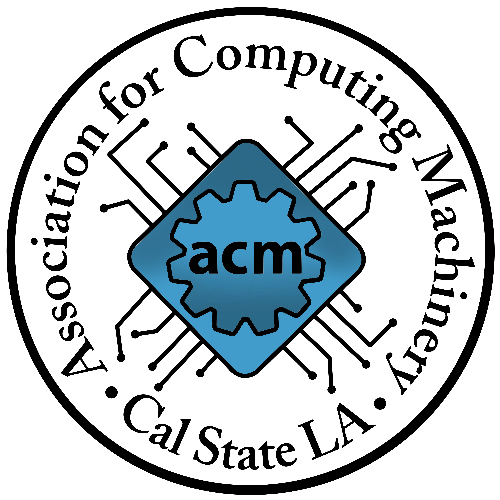

Hello, my name is Daniel Ramirez. I am a Junior at California State University in Los Angeles studying Computer Science with a 3.4 GPA. I am a part of one of the largest computer science clubs at my university called ACM(Association of Computer Machinery) where I am an Administration Officer, I help give back to the community by helping the Secretary in outreach activities/fundraisers that are appointed by the President and follow through with any task assigned by the Secretary, Executive Officer, and the President of ACM. This has helped me learn how to manage my skills in time management to stay on top of deadlines and requirements. I want to be a full-time software developer in the field of Computer Science. I want to research and learn extensively in this field so I can be knowledgeable enough to be able to once again give back to the community by mentoring the new generations that have made the decision to join the STEM field.
 A little crash course summary about me is that I have been apart of ACM for more than 2+ years, I've also have been apart of project workshops that impacted my coding skills for the better. My first workshop was the Space Invaders project, there I was a member and had not that much coding experience. After that I continue to the advance part of the same workshop next semester where I made a full game of the classic hit Space Invaders. After falling in love with the workshop I then began to look for leadership oppurtunities, I then ended up being a project leader/committee for variuos projects and helped develop them with a team for the following semesters, like, the Minecraft Mod, and the Flutter app workshops. This eventually led me to take up the Adminstrator Officer role of the club, where I help the President, Vice President, Secretary, and the Executive Officer in planning events/fundrasiers.